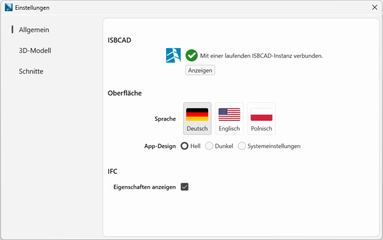
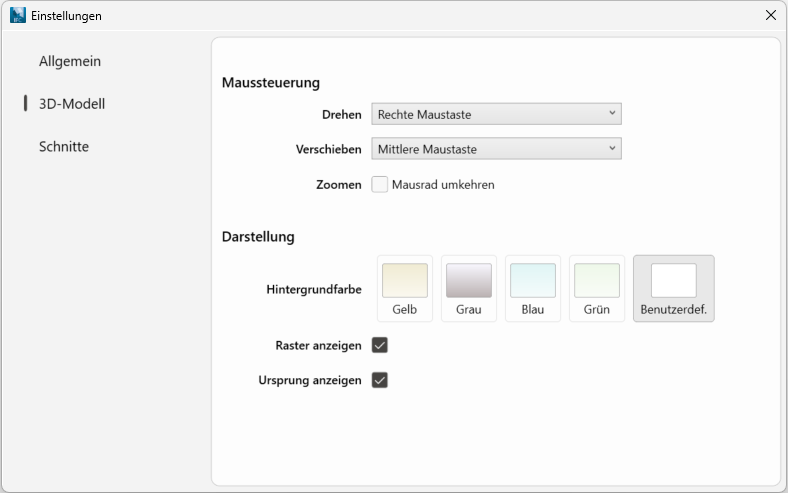
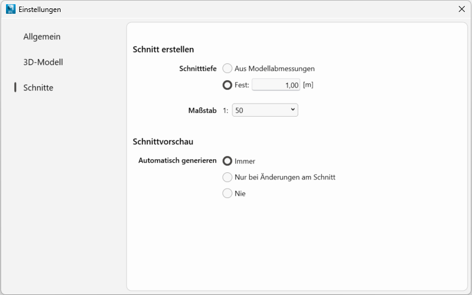

IFC Section Tool Menüleiste → Datei → Einstellungen
Konfiguration der Programmoberfläche und des Programmverhaltens.
Änderungen werden nach dem Schließen des Dialogs über in der rechten oberen Dialogecke wirksam.
Optionen im Dialog "Einstellungen"
Allgemein
 ISBCAD Wenn Sie auf Anzeigen klicken, wird in der Taskleiste die ISBCAD Instanz hervorgehoben, in der das IFC Section Tool gestartet wurde. An diese Instanz werden die Schnitte übergeben. Fahren Sie mit der Maus über das ISBCAD Programmicon, um die geöffneten Instanzen anzuzeigen.
Oberfläche Sprache Spracheinstellungen für die Benutzeroberfläche. App-Design Das IFC Section Tool unterstützt drei Farbmodi: Hell, Dunkel und Systemeinstellungen. Der helle Modus ist für gut beleuchtete Umgebungen optimiert, der dunkle Modus für Arbeiten bei geringem Licht. Ein Wechsel zwischen den Modi kann die Darstellung des Modells und der Texte optimieren und die Augenbelastung verringern. Der Modus Systemeinstellungen richtet sich nach den Personalisierungseinstellungen in Windows wie Transparenzeffekte und Akzentfarben. IFC Eigenschaften anzeigen Blendet den Detail-Bereich mit zusätzlichen Informationen zum ausgewählten Objekt ein oder aus.
|
 Maussteuerung Drehen; Verschieben Standardmäßig wird die Maus zur Navigation im Modellbereich verwendet. In der Ausklappliste können Sie eine alternative Steuerung auswählen. Zoomen Setzen Sie hier einen Haken, wenn beim Vorwärtsdrehen des Mausrades das Modell herausgezoomt, und beim Rückwärtsdrehen herangezoomt werden soll. Darstellung Hintergrundfarbe Auswahl der Hintergrundfarbe für den Modellbereich.
Raster anzeigen Setzen Sie hier einen Haken, um unter dem Modell ein Raster einzublenden. Ursprung anzeigen Setzen Sie hier einen Haken, um den Ursprungspunkt des 3D-Modells einzublenden. |
 |
Schnitt erstellen
Schnitttiefe
Aus Modellabmessungen Die Schnitttiefe eines neuen Schnitts entspricht 1/4 der Modellabmessung in Richtung des Schnitts. Ist das Modell z. B. in X-Richtung 16 m breit, wird ein neuer X-Schnitt mit 4 m Schnitttiefe erstellt. Fest Geben Sie einen Wert in [m] ein, mit dem Schnitte standardmäßig erstellt werden sollen. |
Maßstab
Wählen Sie einen Maßstab aus, in dem Schnitte standardmäßig erstellt werden sollen.
Schnittvorschau
Je nach IFC-Modell kann es bei aktiver 2D-Schnittvorschau zu Performanceeinschränkungen beim Ändern von Schnittebenen kommen. Bei größeren Modellen können Sie das Generieren der Schnittvorschau beschränken oder komplett deaktivieren, um flüssiger arbeiten zu können.
Bei Auswahl generieren
Immer Die 2D-Schnittvorschau wird automatisch generiert: 1.Beim Anklicken von Schnitten, entweder im Modellbereich oder in der Schnittliste. 2.Nach dem Ändern einer Schnittebene. Nur bei Änderungen im Schnitt Wenn Sie zwischen den Schnitten in der Schnittliste wechseln, wird keine Vorschau generiert. Klicken Sie auf Jetzt aktualisieren, um die Schnittvorschau zu erzeugen. Sie wird automatisch aktualisiert, wenn Sie den Schnitt im Modellbereich anpassen. Nie Es wird keine 2D-Schnittvorschau generiert. Klicken Sie auf Jetzt aktualisieren, um eine Vorschau der gewählten Schnittebene zu erzeugen. |
Siehe auch: